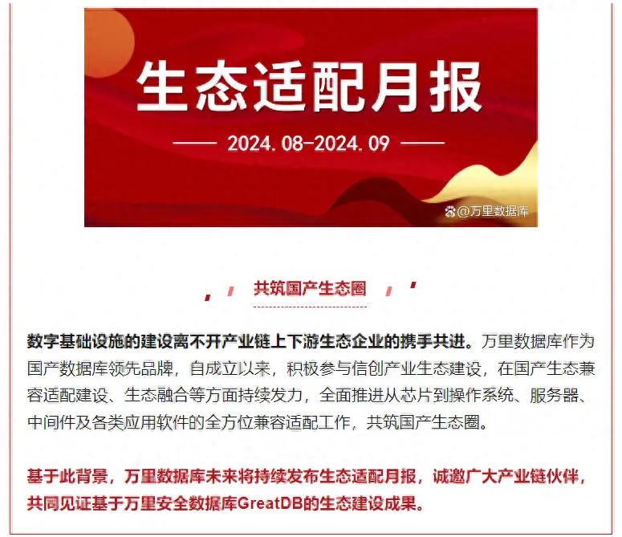
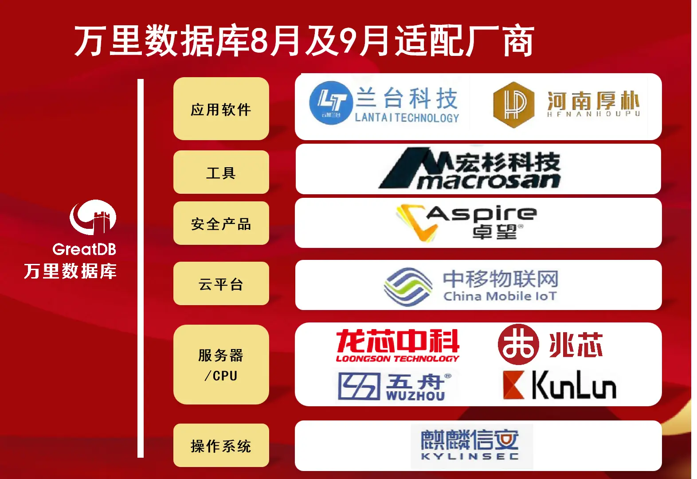
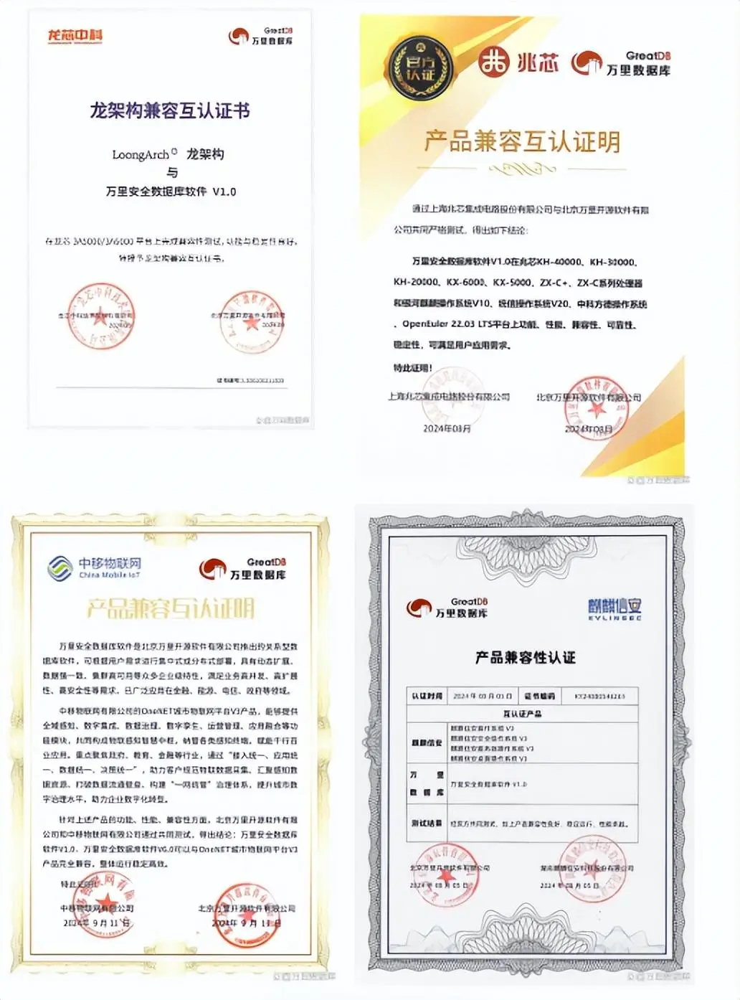
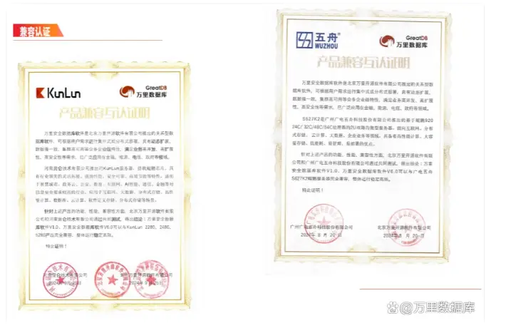
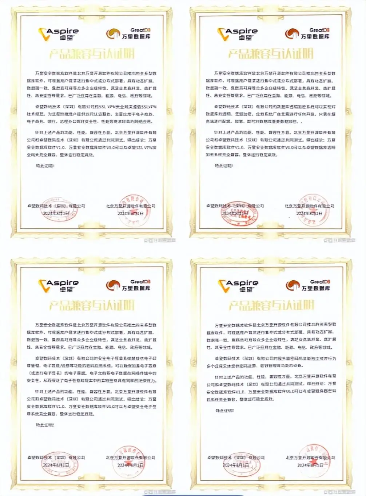

双月报来了！万里数据库8-9月持续开展全链路国产兼容适配

在过去的8-9月，万里数据库先后与龙芯中科、兆芯、麒麟信安、广电五舟、中移物联网及卓望数码等10家生态厂商完成近30款产品的兼容适配工作，进一步加强了国产基础软硬件生态建设，稳固操作系统、CPU及服务器等底层生态链条合作。

此次适配产品覆盖操作系统、服务器、CPU、云平台、安全产品、工具类及应用软件等多个产业链环节，并且与操作系统、服务器及CPU等重要生态伙伴的最新型号产品完成了适配认证，体现了万里数据库在生态体系建设上的高效及时性、持续投入性与产品的高度兼容性。


安全产品全栈适配 护航数字经济健康安全发展
值得一提的是，万里数据库在此期间与卓望数码全栈14款产品完成了兼容适配，涵盖安全电子签单系统、安全网关、数码服务器密码机、密钥管理系统、云服务器密码机、时间戳服务器及透明加密系统等主流安全系列产品。
在兼容适配的基础上，万里数据库未来将联合卓望数码，为重点行业客户的信息安全提供更加坚固的产品技术防线，为我国数字经济健康安全发展增添砝码。

▲万里数据库与卓望数码14款主流产品适配（部分图）
数据库作为信息化的核心环节，是底层硬件基础资源和上层应用之间的重要支撑。作为国产数据库知名厂商，截至目前，万里数据库与超过400家国产上下游生态伙伴进行了持续不间断的兼容适配工作，展现了万里数据库产品的成熟度、高度兼容性，以及公司建设与拓展国产生态体系的决心与实力，为万里数据库与多方生态伙伴在关键基础设施建设、重点行业应用、云原生领域、信创背景下展开更广泛的产品项目合作奠定基础。
着眼未来，万里数据库将始终聚焦数据库核心技术，持续提高产品适配兼容能力，进一步加速国产生态圈建设步伐，持续发挥技术优势，携手生态合作伙伴在底层通用的数据库基础软件领域协同创新、联合攻关，致力于成为客户最信赖的数据库产品供应商，助力自主可信生态链产业化发展。